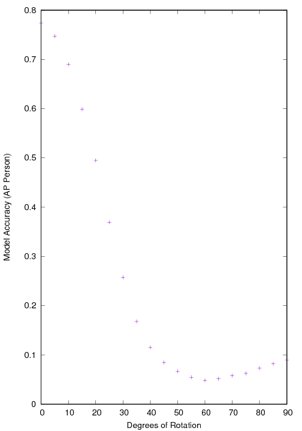

Kent W. Gauen - Projects
Optimal Transport Notes
I participated in an discussion on Optimal Transport (OT) with some Purdue students and faculty. I made a few notes specifically outlining how OT is applied to the Wasserstein GAN. The mathematics leads to specific, non-obvious (to me) code changes from the original GAN algorithm. This is an example of how abstract mathematical constructs have meaningful code changes. The document is linked here.
MCMC trajectory inference for semi-Markov Jump Process
In many ways a Markov Jump Process (MJP) is a continuous time version of Hidden Markov Models. In a MJP, the jump times following a Poisson Process with a constant rate; that is, the chance of making a jump does not depend on the history of the jumps. A semi-Markov Jump Process is a generalization of MJP, and allows the jump times to depend on the hold time of a specific state.
Classifying True Positives v.s. False Negatives
For object detection, a model can either find the annotation (a true positive) or a miss an annotation (a false negative). For two weeks, I worked on classifying the two types of annotations to identify if there is some abstract relationship between images that a deep learning model could discover. TLDR; maybe but this experiment is not convincing.
| Experimental Results | ||
| PASCAL VOC train | True Positive Rate | 0.69 |
| PASCAL VOC train | True Negative Rate | 0.43 |
| PASCAL VOC test | True Positive Rate | . |
| PASCAL VOC test | True Negative Rate | . |
The model seems to do only okay on the training test, and generalized somewhat poorly to the testing set. This is surprising to me. I will keep tweaking this in the future.
Stability Analysis of a Neural Network
Since the recent success of using deep learing models for tasks such as object detection, companies, media outlets, and academic conferences have been referring to two major phenomena: (1) artificial intelligence (2) autonomous machines. This purpose of this paper is to address these phenomena. First, we argue that image processing is only distantly related to artificial intelligence. Second, we identify important issues limiting the application of computer vision to autonomous machines in commericial settings. Check out the pdf report here.
Rotate and Evaluate
Translation invariance of an operation is satisfied when any translation (or geometrically interpreted as “sliding”) of a given pattern yields the same output. It can be shown the convolution operation is translation invariant. However, it is not in general rotationally invariant. For an object detection deep learning model, how well does the model perform under rotation? The detailed findings are included in this report. Below is the resulting accuracy measure ( average precision in this case ) for the Faster RCNN model, and an example of how the predictions from Faster RCNN change with the rotation of the image.
|
 |
This image is the evaluation of the Faster RCNN |


Here are some more examples of rotating image gifs.
How does Faster RCNN accepts many input image sizes?
Faster RCNN pdf describes a specific implementation of a deep learning model for object detection. Other machine learning models deform an image to a specific image size, determined when the model is first created. Instead, Faster RCNN accepts a range of image sizes. “But how?” One might wonder. After all, a deep learning model is a machine not unlike a mechanical pencil. Saying a model accepts many input image sizes seems analogous to saying the mechanical pencil can accept many different sizes of led. In the analogy, a piece of led too skinny would slide straight through the pencile. A piece of led too large would not fit through the plastic tip. So how does this machine, Faster RCNN, accept many different input image sizes?
The answer is give in this report.